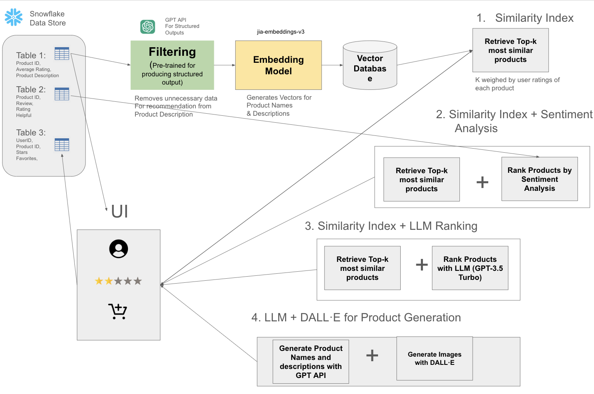
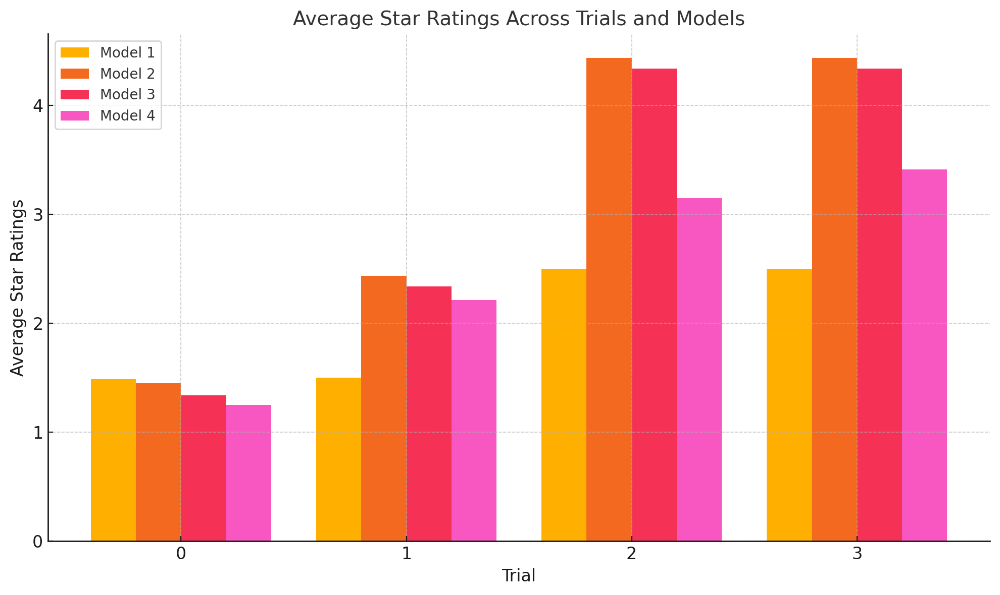
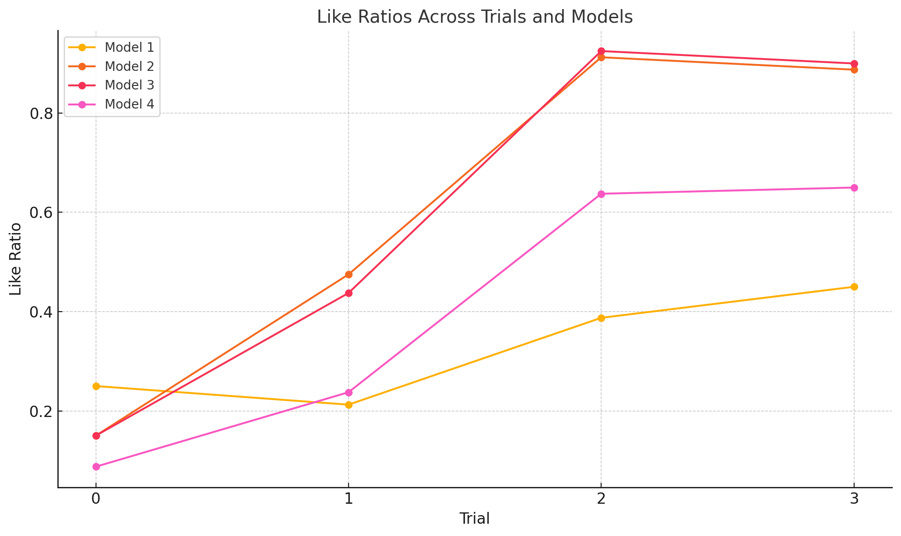

Enhancing Gift Recommendations
Fall 2024 CSCI 5541 NLP: Class Project - University of Minnesota
Team Backpropagation Nation

Yashas Acharya

Thomas Knickerbocker

Owen Ratgen
Yashas Acharya
Thomas Knickerbocker
Owen Ratgen
This study investigates integrating modern natural language processing (NLP) techniques into recommendation systems to address the cold start problem and improve user satisfaction. We evaluate four models, finding that approaches incorporating sentiment analysis and semantic reasoning achieved average star ratings of 4.44 compared to 2.50 for the baseline. Additionally, an exploratory generative model using LLMs and DALL E demonstrates potential in producing novel recommendations but faces challenges in diversity and scalability. Our findings highlight the value of hybrid approaches that combine retrieval-based and generative methods, offering practical and scalable solutions for businesses while identifying key areas for future improvement.
Our teaser figure illustrates the core framework of our project: integrating NLP techniques, including embeddings, sentiment analysis, and generative AI, into product recommendation systems to address the cold start problem and enhance user satisfaction. The diagram highlights the data flow from preprocessing and vector generation to various recommendation models that refine and personalize suggestions based on user preferences. This innovative approach demonstrates the potential for scalable, efficient, and context-aware recommendation systems in e-commerce.

We aimed to create a smarter way to suggest products people might like when shopping online, even if they haven't provided much information about themselves. The goal was to solve the issue of making relevant suggestions for new users or items when there's little to no data available. Our objective was to improve how recommendations are made so that they feel more personal and useful for each person.
Currently, online stores use methods like looking at what other users liked or focusing on product features to make recommendations. However, these methods struggle when there isn't enough information, such as for new users or products, and they often fail to understand the deeper preferences of users.
This matters to anyone shopping online or running an online store. For shoppers, better recommendations mean finding what they like faster and having a more enjoyable experience. For businesses, it could lead to happier customers, more purchases, and stronger customer loyalty. If our approach works, it could make online shopping smarter and more satisfying for everyone involved.
To improve product recommendations, we used a combination of modern techniques that go beyond traditional methods. Our approach involved the following key steps:
We started with a dataset of Amazon reviews in the Toys and Games category and refined it by removing unnecessary data, filtering inappropriate content, and focusing on verified purchases. We used advanced tools to turn product descriptions into dense vector representations, making it easier to compare items based on their meaning. Additionally, sentiment analysis was applied to reviews to understand user opinions better.
We explored four different models to generate recommendations:
Recommendations were refined over time based on user interactions, such as ratings and likes. Each interaction helped adjust the system to provide more personalized and relevant suggestions in subsequent rounds.
We evaluated the effectiveness of our models using metrics such as average star ratings, like ratios, and the diversity of recommendations. Here's a summary of the key findings:
| Model | Final Avg Star Rating | Final Like Ratio | Diversity (Unique Products) |
|---|---|---|---|
| Model 1: Similarity Index | 2.50 | 45% | 78 |
| Model 2: Similarity Index + Sentiment Analysis | 4.44 | 88% | 76 |
| Model 3: Similarity Index + LLM Ranking | 4.34 | 90% | 77 |
| Model 4: LLM + DALL·E for Product Generation | 3.41 | 65% | 32 |
The figures below illustrate the comparison of average star ratings and like ratios across the four models:
Figure 1: Average Star Ratings Across Models and Trials
Figure 2: Like Ratios Across Models and Trials
In this study, we explored the integration of advanced natural language processing techniques, including embeddings, sentiment analysis, and generative AI, into recommendation systems to tackle the cold start problem and enhance user satisfaction. The results showed that hybrid approaches, particularly those combining embeddings and sentiment analysis (Model 2) or leveraging large language models for semantic reasoning (Model 3), significantly outperformed baseline methods in terms of star ratings, like ratios, and recommendation diversity. Generative methods (Model 4) showcased potential for creating novel recommendations but faced limitations in diversity and scalability. These findings highlight the importance of combining traditional retrieval-based methods with modern AI-driven approaches to create scalable and effective recommendation systems.
Future work should focus on addressing the challenges identified in this study, such as enhancing data sparsity solutions, improving the diversity of generative outputs, and refining metrics to better capture user engagement and satisfaction. Further experimentation with diverse datasets across various domains is necessary to validate the robustness of these models. Additionally, incorporating fairness and transparency mechanisms, such as adaptive weighting for underrepresented items and privacy-preserving techniques, could ensure ethical and inclusive applications. By continuing to refine hybrid models and addressing these challenges, we can advance the state of recommendation systems, making them more adaptable, impactful, and user-friendly.